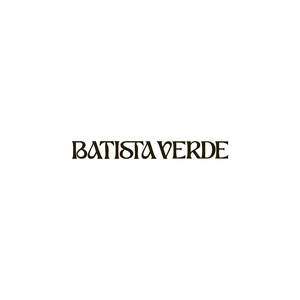

Trade Mark Journal No.2025/030 25 July 2025
UK00004232746 11 July 2025 (3,4)

- Class 3
- Skincare cosmetics; Anti-aging skincare preparations; Anti-aging moisturizers used as cosmetics; Skincare preparations; Moisturisers [cosmetics]; Skin moisturizers used as cosmetics; Anti-aging moisturizers; Anti-ageing moisturiser; Suncare lotions [for cosmetic use]; Cosmetic moisturisers; Anti-ageing creams [for cosmetic use]; Cosmetic products in the form of aerosols for skincare; Moisturising skin lotions [cosmetic]; Beauty serums; Anti-aging creams [for cosmetic use]; Acne cleansers, cosmetic; Non-medicated skincare preparations; Facial moisturisers [cosmetic]; Skin cleansers [cosmetic]; Suncare lotions; Moisturising skin creams [cosmetic]; Beauty serums with anti-ageing properties; Facial creams [cosmetics]; Anti-aging creams; Anti-ageing creams; Skin moisturisers; After-sun oils [cosmetics]; Anti-ageing serums for cosmetic purposes; Skin care lotions [cosmetic]; Beauty lotions; Skin care cosmetics; Skin moisturizer; Skin moisturiser; Skin moisturizers; Skin balms [cosmetic]; After-sun lotions [for cosmetic use]; Cosmetic creams for skin care; Moisturisers; Beauty care cosmetics; Skin care creams [cosmetic]; Skin recovery creams [cosmetics]; Cosmetic creams for the skin; Skin creams [cosmetic]; Skin creams [for cosmetic use]; Cosmetics; Facial cleansers [cosmetic]; Anti-wrinkle creams [for cosmetic use]; Sunscreen creams [for cosmetic use]; Cosmetic nourishing creams; Skin masks [cosmetics]; Moisturiser; Skin cleansers; Self-tanning preparations [cosmetics]; Moisturizers; Cleansing creams [cosmetic]; Skin moisturizer masks; Anti-ageing serum; Hairstyling serums; Facial lotions [cosmetic]; Cosmetic facial lotions; Exfoliants for the care of the skin; Body and facial creams [cosmetics]; Exfoliants for the cleansing of the skin; Non-medicated skin serums; Cosmetic creams and lotions; Skin care oils [cosmetic]; Facial moisturizers; Moisturising body lotion [cosmetic]; Hair care lotions [for cosmetic use]; Beauty balm creams; Anti-aging serum for cosmetic use; Beauty creams; Skin lotions; Lotions for the skin; Skin fresheners [cosmetics]; Sunscreens [for cosmetic use]; Skin toners [cosmetic]; Skin cleansing lotion; Body creams [cosmetics]; Cosmetic massage creams; After-sun milks [cosmetics]; Skin whitening creams; Creams (Skin whitening -); Hair care creams [for cosmetic use]; Sunscreen [for cosmetic use]; Tanning oils [cosmetics]; Facial creams [for cosmetic use]; Sun care lotions [for cosmetic use]; Facial creams [cosmetic]; Skin make-up; Cosmetic hair lotions; Exfoliating creams; Suntan lotion [cosmetics]; Skin cleansers [non-medicated]; After-sun milk [cosmetics]; Skin whitening preparations [cosmetic]; Hair moisturisers; Creams for tanning the skin; Cosmetic products for the shower; Aromatherapy creams; Moisturizing creams; Skin cream [for cosmetic use]; Cosmetics for use in the treatment of wrinkled skin; Skin lotion; Anti-aging cream; Skin hydrators; Organic cosmetics; Creams (Cosmetic -); Cosmetic creams; Cosmetics for use on the skin; Night creams [cosmetics]; Aromatherapy lotions; Skin hydrators for cosmetic purposes; Cleansing lotions; Facial cleansers; After-sun lotions; Facial gels [cosmetics]; Hair care serums; Anti-wrinkle creams; Beauty creams for body care; Self-tanning preparations [cosmetic]; Anti-wrinkle cream [for cosmetic use]; Moisturising creams; Cosmetic preparations for skin firming; Cosmetic products in the form of aerosols for skin care; Exfoliant creams; Hair cosmetics; Cosmetics for suntanning; Skin creams; Creams for the skin; Moisturizing preparations for the skin; Colour cosmetics for the skin; Hair moisturizers; Facial lotions; Dermatological creams [other than medicated].
- Class 4
- Mineral oil for use in the manufacture of cosmetics and skin care products.
BATISTA VERDE LTD